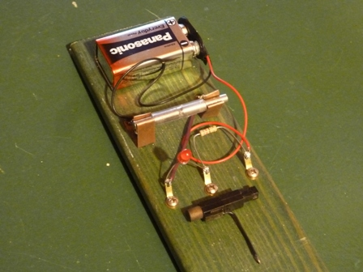
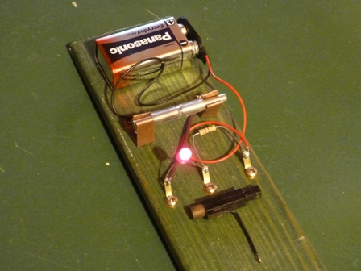

Basta cercare in rete la parola coherer e si trova tutto quello che si vuole su questo misterioso dispositivo elettronico.
I due aggettivi sono importanti per quello che voglio dire: sia "elettronico" che "misterioso" sembrano parole grosse in riferimento alla minuzia di cui si tratterà, ma in sostanza sono assolutamente meritate, se non addirittura modeste.
E così rimando di corsa al solito San Google, attraverso il quale avremo anche l'occasione di ricordare con riconoscenza l'esimio professor Temistocle Calzecchi Onesti che inventò il "coesore" nel 1884.
Per riassumere veramente in due parole di cosa stiamo parlando, dico solo che si tratta di un tubicino di vetro con dentro un pizzico di limatura metallica (non compressa) e che è capace di rivelare le onde elettromagnetiche.
Che colpaccio! Un "QUASI NIENTE" fatto in officina con la lima e sensibile alle onde radio!
E' un oggettino talmente insignificante che mi ha sempre affascinato, fin da quando ho saputo da bambino di quel famoso colpo di fucile di Guglielmo Marconi, che fu sparato proprio grazie al coherer.
Dopo una vita mi sono deciso a verificarlo di persona (verificare galileianamente, questa è una mia fissa...) e voglio proprio vedere se quella limatura da nulla sarà veramente capace di dirmi se vicino a lei è scoccata una scintilla elettrica!
Detto fatto.
Ho limato una vecchia moneta da 100 lire (ha la giusta composizione a base di nichel), ho costruito il coherer e l'ho provato secondo il classico schema seguente:

Ed ecco la realizzazione pratica, fatta in un quarto d'ora per provarlo.


Coherer spento Coherer acceso
In basso si vede la piccola capsula piezo, recuperata da un accendino, che serve a innescare il dispositivo a qualche distanza.
Facendo le cose per bene (antenna, terra e quant'altro, Marconi docet, appunto!) la distanza aumenta... fino a diventare un rudimentale radioricevitore.
In condizioni normali il LED è spento perchè la limatura metallica NON conduce, avendo molti megaohm di resistenza.
Facendo scoccare una scintilla con il classico accendigas piezoelettrico (ma anche senza provocare una scintilla, basta la scarica oscura nell'aria per effetto corona) il LED si accende e la resistenza del coherer crolla a qualche centinaio di ohm o meno, e in tale stato rimane anche dopo la cessazione dell'impulso.
Si tratta quindi di un dispositivo bistabile e per farlo tornare nelle condizioni primitive occorre dare un colpetto meccanico al tubicino, così il LED si spegne ed il circuito è pronto a rivelare l'eventuale successiva onda elettromagnetica smorzata.
(Ved. ricca bibliografia per tutte le considerazioni, come dicevo sopra).
Ma come è possibile? Ma come può funzionare un accrocco del genere? Quale fisica invocare?
Si leggono in rete superficiali "spiegazioni" riguardo microfusioni e orientamenti dei granuli che non mi convincono affatto; troppo piccola è l'energia in gioco.
Del resto anche lo stesso nome dato da Calzecchi Onesti (coesore) condurrebbe un pensiero meramente intuitivo a pensare che i granuli metallici si "fondano" in qualche modo tra di loro, altrimenti come si spiegherebbe la conducibilità?
L'unico ragionamento che finora mi soddisfa è quello che ne dà il bravissimo Prof. Guido Pegna dell'UNICagliari, che qui riporto integralmente prendendolo da un suo lavoro (sperimentale!) sul coherer.
Eccolo, con anche il *link* per chi volesse leggere l'originale:
-Il principio di funzionamento del coherer è tuttora non chiaro.
Esso è, anche al confronto con i dispositivi a stato solido oggi conosciuti, estremamente interessante.
E' un dispositivo bistabile molto sensibile, nel quale sono in atto processi a valanga probabilmente mediati da effetto tunnel attraverso le sottili barriere di ossido alla superficie dei granuli della limatura.
Ma occorre ancora capire perchè mentre sotto una tensione continua di qualche volt esso non conduce, basta un segnale ondulatorio di qualche decimo o centesimo di volt per portarlo in conduzione.
Non c'è spiegazione poi sul perchè lo stato di bassa resistenza permanga anche dopo che è cessata l'eccitazione.-
Bello vero? Condivisibile il ragionamento che lascia le porte aperte a ciò che ancora non è chiaro e non propone spiegazioni affrettate e poco credibili.
Bello pure il coherer del vecchio Temistocle, che di "effetti tunnel" (se di questo si tratta!) era in anticipo senza saperlo di una settantina di anni sul vero diodo tunnel di Esaki.
1 commenti